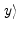

| Learning-Tool User Manual |
 |
 |
 |
Algorithm for offline training of the threshold gate
Here we just outline the main body of the procedure which we will use
to train the readout. This will be discussed in more detail in
Section ![[*]](crossref.gif) .
.
- Define the neural microcircuit to be analyzed
- Record spike responses of the neural microcircuit
caused by different training inputs drawn from an appropriate
input distribution.
- Convert the spike responses into states x(tk) at
various sample time points tk by some low-pass filtering
to get a somewhat smoothed signal. This mimics the effect of spike
transmission through a synapse to its postsynaptic neuron. This
transformation can also be dropped if one can cope directly with the
spike response.
- Apply a supervised learning algorithm to a set of
training examples of the form state
x, target-value
 to train a readout function
f (a threshold gate in the case of this example) such that the
actual outputs f(x) are as close as possible to the target values
y given by the target function.
- Evaluate the performance of the trained readout (i.e. the
threshold gate) on an independent set of test inputs (which
are usually drawn from the same distribution as the training
inputs).